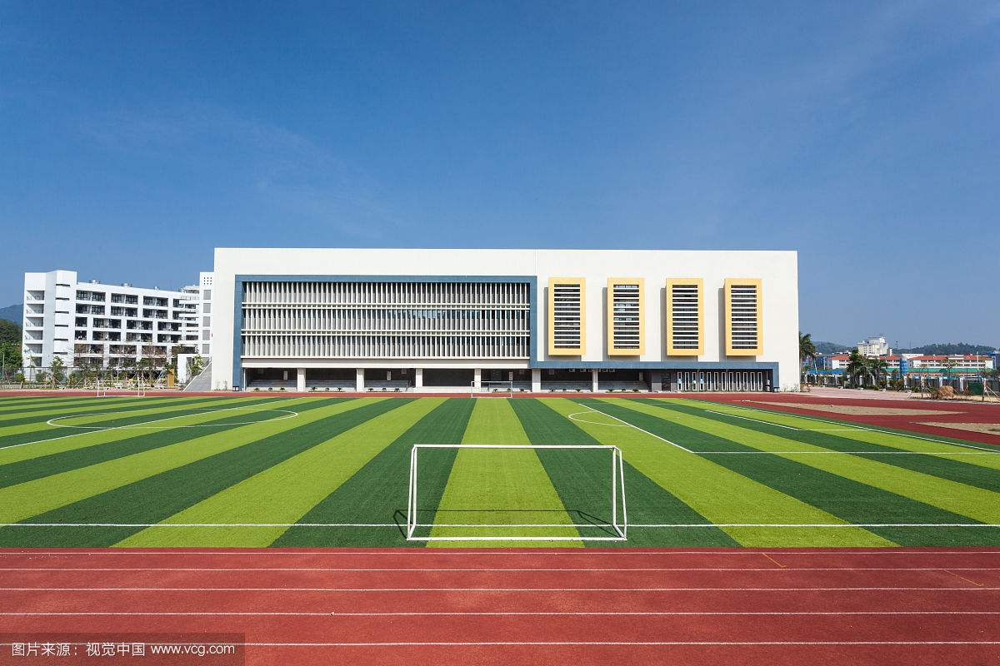

在威斯敏斯特教堂旁边，矗立着一块墓牌，上面刻着一段非常著名的话:"当我年轻的时候，我梦想改变这个世界； 当我成熟以后，我发现我不能够改变这个世界，我将目光缩短了些，决定只改变我的国家；当我进入暮年以后，我发现我不能改变我们的国家， 我的最后愿望仅仅是改变一下我的家庭，但是，这也不可能。当我现在躺在床上，行将就木是，我突然意识到：如果一开始我仅仅去改变我自己， 然后，我就可能改变我的家庭；在家人的帮助和鼓励下，我可能为国家做一些事情，人啊哈，谁知道呢？我甚至可能改变这个世界。"
——题记
渴渴青春路，多少岔路口，青春蹉跎，机会错过。而我，庆幸遇上了柳职的老师。
敲完最后一行代码，走出办公室。站在曾经觉得特别高大上的落地窗前，看着倒影中的自己，虽说有点累，但感到特别的充实， 许久没有过这种踏实和平静的感觉。我喜欢并珍惜作为女程序员的日子。这一切，都要感谢柳职以及柳职的每一位老师。
我庆幸在最美的年华、最渴望改变的时候遇到了柳职，庆幸遇上了柳职的老师，因为你们的专业和专注，才成就了我向往的IT梦， 才让我在青春痘路上开满了理想的花、在此真心感谢柳职的每一位老师，纵然时光荏苒，师恩永远铭记在心。